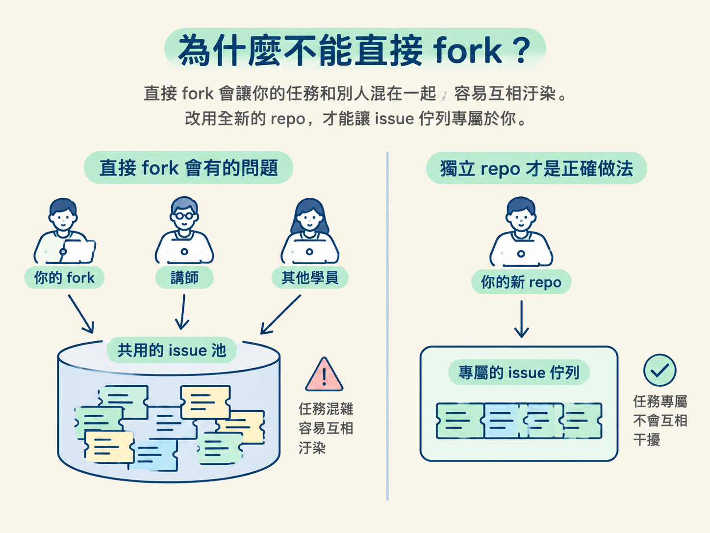
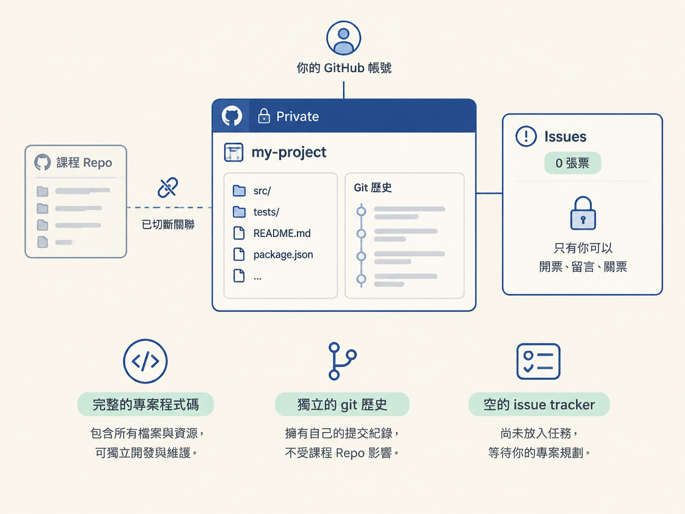

這一節完成後，你會有一個屬於自己 GitHub 帳號的私有 repo，並且擁有獨立的 issue tracker。之後，agent 只會從這個 repo 取得你放進去的任務，不會混入其他人的 issue。
動手前請先準備好兩樣東西：
gh（GitHub CLI）。下面的流程會建立一個新目錄，原本的專案不會被修改。整套操作可以想成搬家：先複製一間一模一樣的房子，再把門牌、地契和歷史紀錄換成自己的。
你手上的課程專案，remote 目前指向講師的 GitHub repo。最直覺的做法，是把它 fork 到自己的帳號底下；但 GitHub 的 fork 有一個容易踩到的陷阱：fork 出來的 repo，issue 預設會和原 repo 共用。
也就是說，你在自己的 fork 開出的每一張 issue，可能會流進講師 repo 的共同池。每位學員都往同一個 issue 池放任務，又從同一個池撈任務，agent 就可能拿到別人的票，你開的票也可能被別人撈走。
因此，這裡不直接 fork，而是把專案複製成一個全新的 repo。這樣才能讓 issue 佇列真正專屬於你。

接下來依序做五件事：
以下用 cohort-004-project 當作原始專案名稱，並把新專案命名為 cohort-004-project-fork。請依你的實際專案名稱替換。
先在本機複製一份專案，並用一個容易辨識的名稱命名：
cp -R cohort-004-project cohort-004-project-fork
cd cohort-004-project-fork這兩行會先建立新的 cohort-004-project-fork 目錄，再切換進去。預期結果是：新目錄裡的檔案和原專案一模一樣，而原本的專案仍留在原地。
接下來的所有指令都要在這個新目錄裡執行。可以先用 pwd 或檢查目前目錄名稱，確認自己沒有誤回原始專案。
警告：這一步不可逆。刪除 .git 會一併移除原本的提交歷史與 remote 設定。請務必確認你目前位於剛剛複製出來的新目錄，千萬不要在原始專案上執行。
rm -rf .git
git initrm -rf .git 會移除舊 repo 的版本控制資料；git init 則會在目前這份檔案上重新建立一個乾淨的 git repo。
做完後，這份專案不再沿用原本 repo 的提交歷史，也不再保留原本的 remote 設定。它現在是一個乾淨、獨立的新 repo。
接著用 gh 建立新的私有 repo，並讓目前目錄直接成為它的來源：
gh repo create cohort-004-project-fork --private --source=. --remote=origin這一行會同時完成三件事：
cohort-004-project-fork 的 repo。--private 將 repo 設為私有。--source=. 把目前目錄當成來源，並用 --remote=origin 設定新的 origin remote。預期結果是：GitHub 上出現一個屬於你的新 repo。它不再是課程 repo 的 fork，而是一個獨立的 repo。
現在替目前這份專案建立第一個 commit，然後推送到新的 GitHub repo：
git add -A
git commit -m "Initial commit"
git push -u origin main這三行分別會：
git add -A 將目前目錄的所有檔案加入待提交清單。git commit 建立名為 Initial commit 的初始提交。git push -u origin main 將 main 分支推到新的 origin。推送成功後，打開 GitHub 上的新 repo，應該會看到完整的專案程式碼。如果你的預設分支不是 main，請把指令中的 main 換成實際使用的分支名稱。
最後打開新 repo 的 Issues 頁面，確認它目前是空的，而且這是你自己的私有 repo。你也可以直接在終端機列出 issue：
gh issue list現在看不到任何 issue 是正常的。你已經有一條乾淨的任務佇列，下一步只要放入第一張票，agent 就能從這裡取得任務。
| 直接 fork 課程 repo | 複製成自己的新 repo | |
|---|---|---|
| issue 流向 | 流進與所有人共用的池子 | 只留在你自己的 repo |
| 與原 repo 的關係 | 是 fork，彼此關聯仍在 | 乾淨獨立、沒有牽連 |
| agent 拉到的任務 | 可能是別人的票，容易混亂 | 只有你放進去的票 |
| 安全性 | 別人的操作可能影響你 | 只有你能互動 |
你現在應該擁有一個自己的私有 GitHub repo，裡面有完整的專案程式碼、獨立的 git 歷史，以及一個尚未放入任務的空 issue tracker。

直接 fork 課程 repo 會讓所有人共用同一個 issue 池，因此要改成「本機複製一份 → 刪掉 git 歷史 → 在自己的帳號建立新 repo → 接上新 remote → 推上去」。完成後你會有一個獨立、私有的 issue tracker，只有你能開票、留言、關票。刪除 .git 不可逆，務必只在新複製出來的目錄裡做。
你的私有佇列已經就緒。接下來要處理最後一哩路：讓沙箱裡的 agent 連上這個 repo，抓取開放的 issue、挑選一件任務，完成後再把票關掉。下一節會用 GitHub CLI 和 prompt expansion 把這條流程接起來。